PROJET COMPLET · 0.17.0 CANDIDATE · ANDROID NOT_RUN
Commander vite, lire d’un coup d’œil, un habillage qui grandit avec l’empire.
Captures réelles du jeu dans Godot 4.7.2 (OpenGL logiciel sur Linux, 1600×740 = format paysage du Galaxy S25 Ultra à l’échelle 1). À gauche la 0.16.0, à droite la 0.17.0, même scène et même graine. Les boutons restent à la même place dans les 10 âges : seul l’habillage change.
Combien de touchers ?
| Action | 0.16.0 | 0.17.0 |
|---|
| Tous les ouvriers inactifs | impossible | 1 |
| Toute l’armée | impossible | 1 |
| Tous les mêmes à l’écran | impossible | 2 (double appui) |
| Rappeler un groupe | impossible | 1 |
| Trajet A → B → C | impossible | 1 + 3 |
| Former 5 unités | 5 | 1 |
| Ligne de murs | 12 | 1 glissé + 1 |
| Lancer un pouvoir | 3 et plus | 2 |
| Aller à la dernière alerte | impossible | 1 |
Début de partie
0.16.0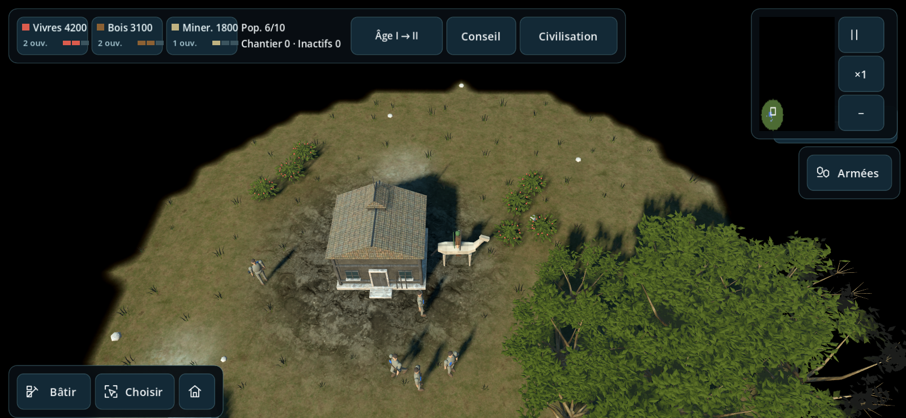
0.17.0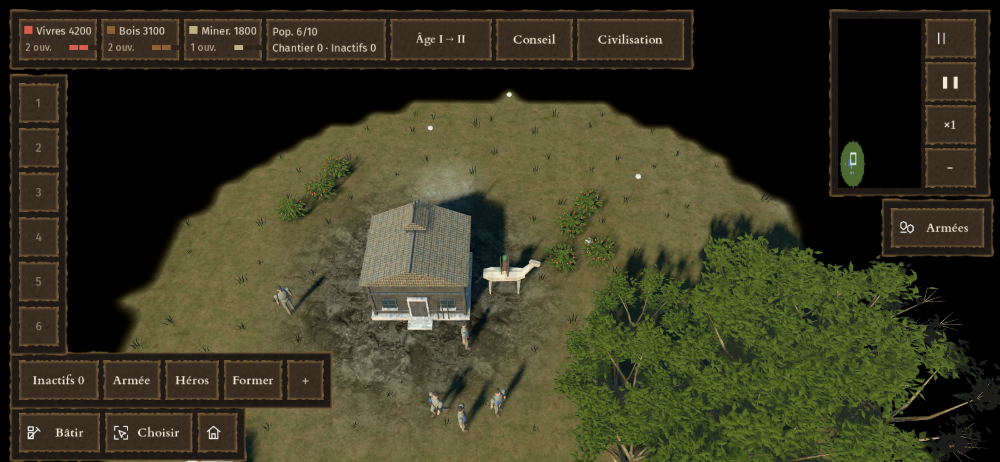
Armée sélectionnée · carte de commandes
0.16.0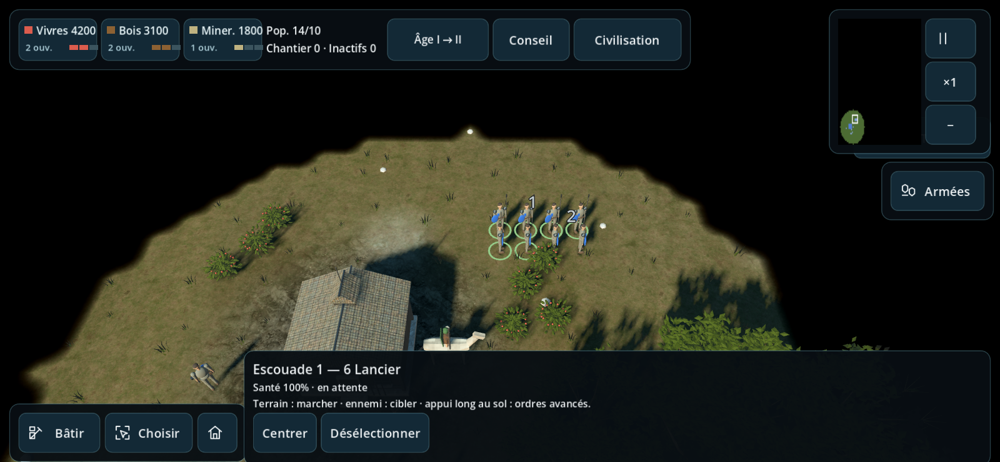
0.17.0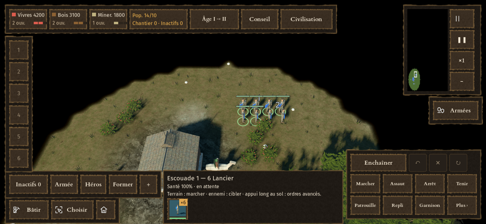
Ordres enchaînés A → B → C
0.17.0 · étapes numérotées au sol0.17.0 · grand écran 2400×1110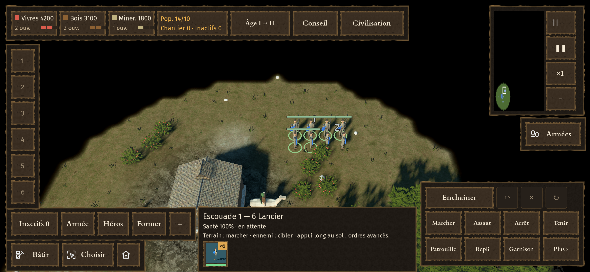
Caserne · production
0.16.0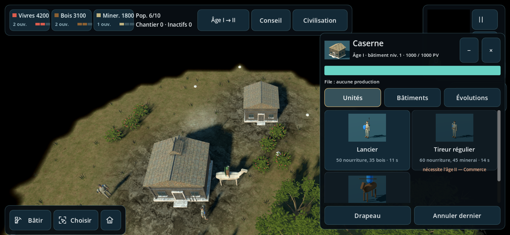
0.17.0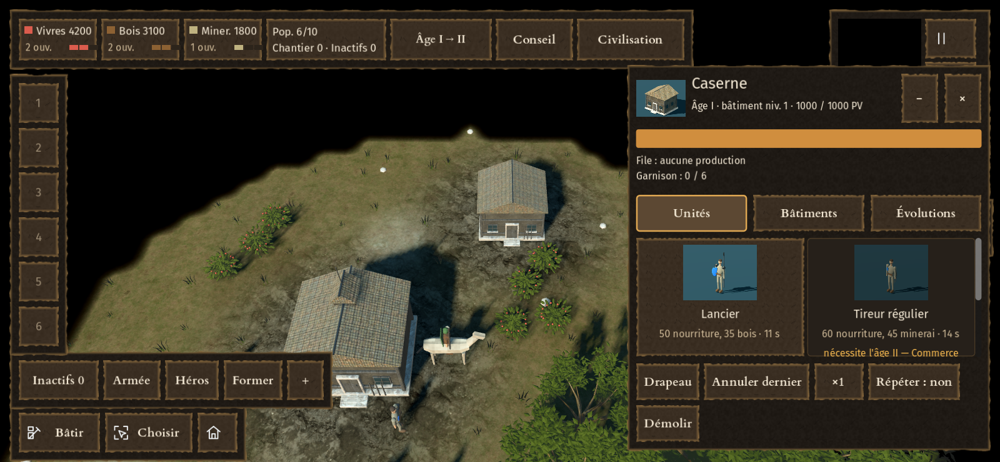
Pose de bâtiment
0.16.0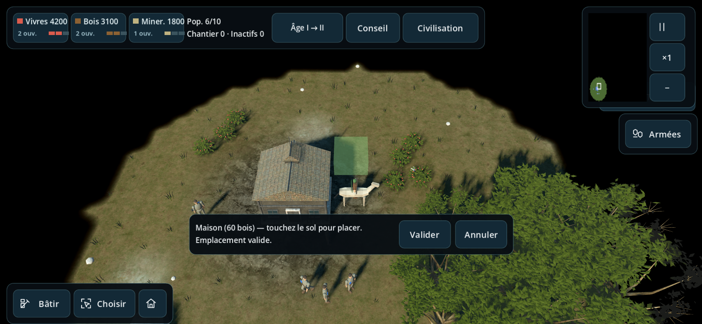
0.17.0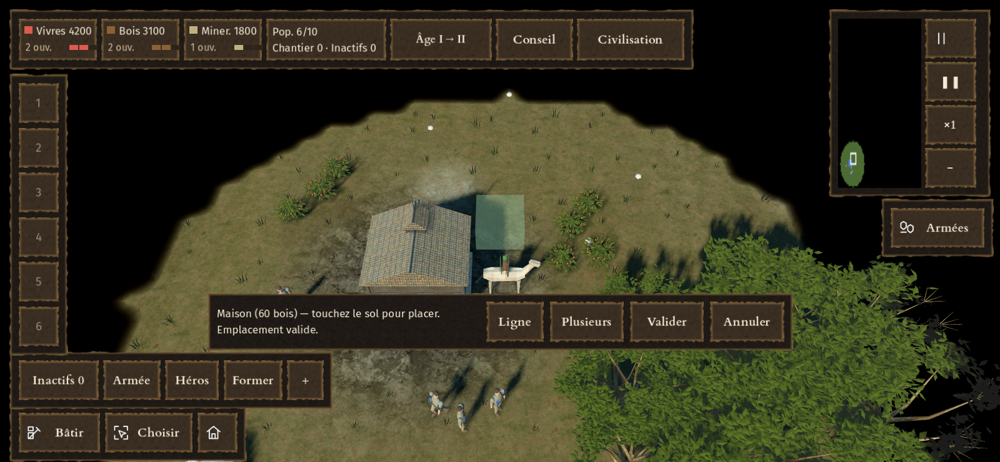
Civilisation
0.16.0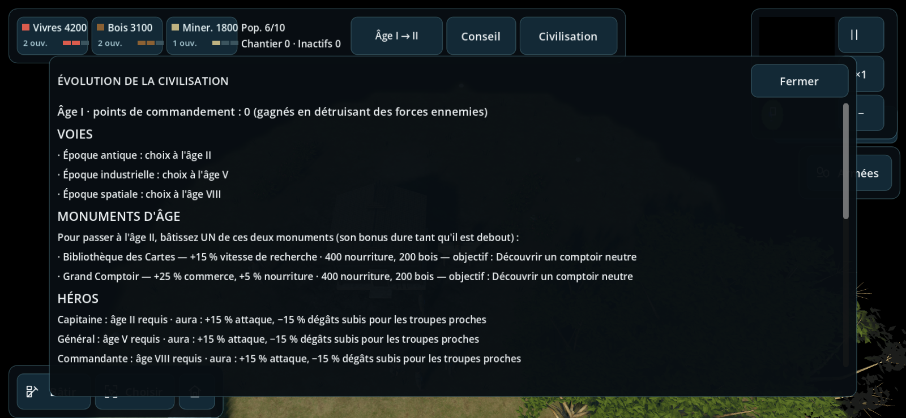
0.17.0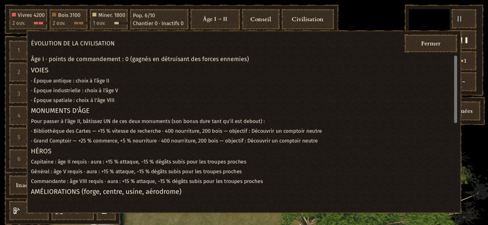
Bataille
0.16.0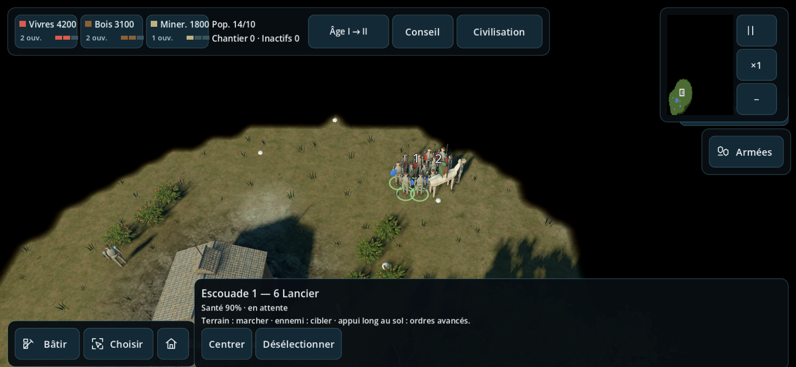
0.17.0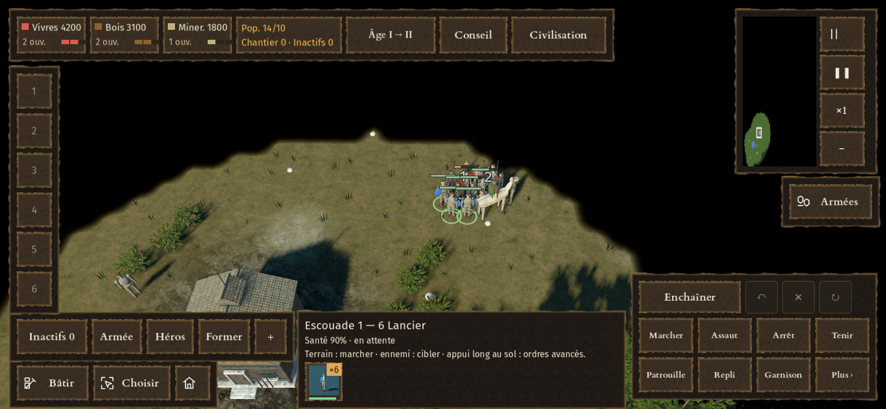
Globe
0.16.0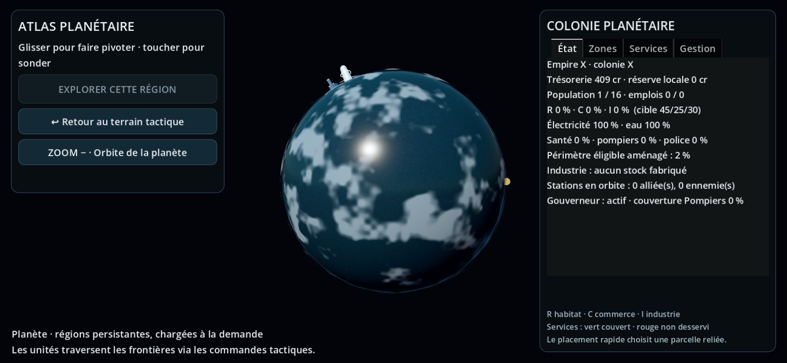
0.17.0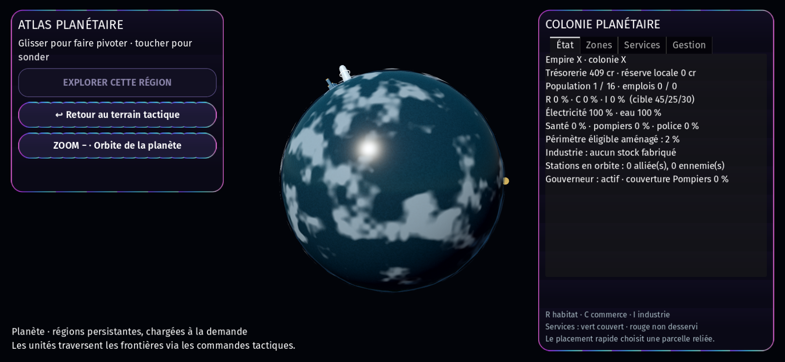
Planche des 10 âges
Même partie, même disposition, thème de chaque âge (à gauche la scène avec une armée sélectionnée, à droite le panneau Civilisation). Les contrastes indiqués sont mesurés par la recette ui_theme sur les couleurs réelles (jetons et centre des textures) : texte ≥ 4,5:1 et éléments graphiques ≥ 3:1 dans chaque âge.
Âges I à X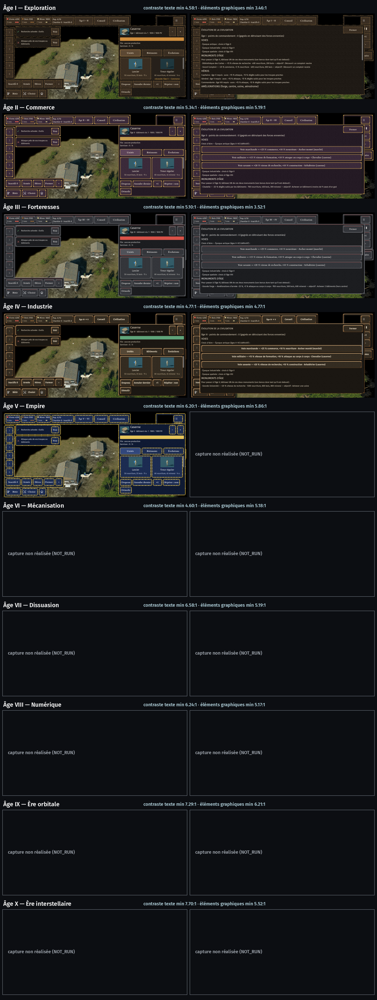
Aucun APK n’accompagne cette version. Essais sur téléphone : NOT_RUN.